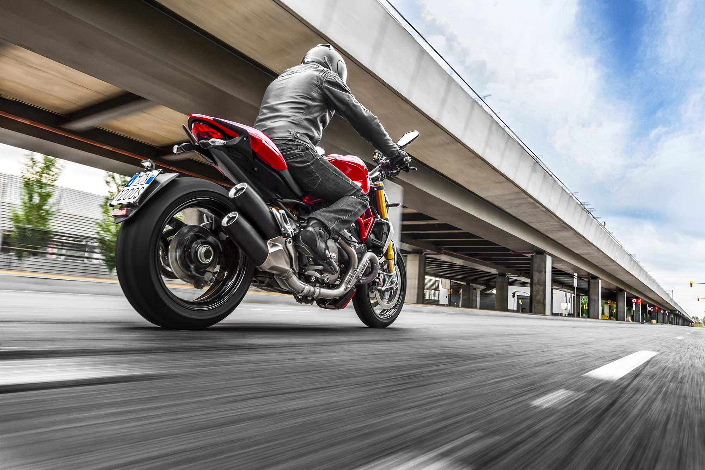

В этой группе вы найдете всю информацию о шоссейно-кольцевых гонках на мотоциклах. Где проходят тренировки, гонки, бесплатные мастер классы и обучение. В зимний период мы тренируемся на крытых трассах monza karting
Born To Race - некоммерческая спортивная организация. Мы организуем выезды на гоночные треки в Санкт-Петербурге и в Финляндию, в другие города России и на европейские треки.
+79219491022 Instagram -> #B2R #BTR #borntorace #born2race #автодром
В Питере отсутствует культура выезда на трек, мы это прекрасно понимаем и хотим исправить это. Наша цель - сделать кольцо доступным для любого владельца мотоцикла.